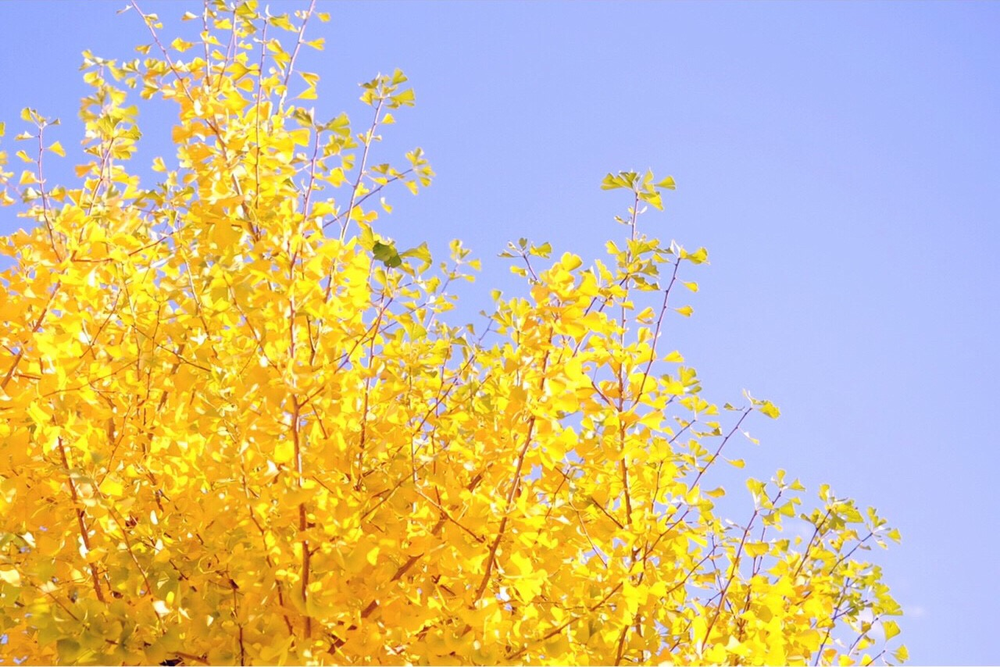
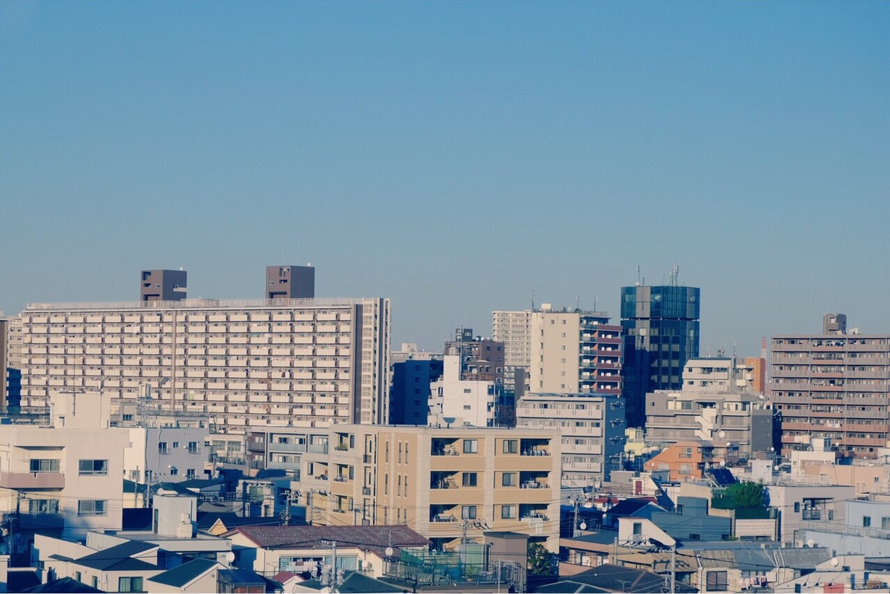
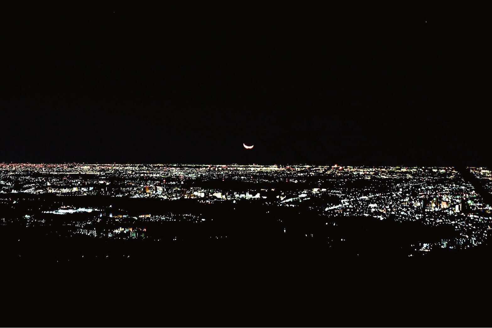

about
山形県出身。20歳。好きな食べ物はオムライス。
理科の先生になりたかったが、行きたい大学に入るには学力が足りず断念。
クリエイターを目指し東京の大学へ進学後、中退。
平成最後にママになる。ﾒｯﾁｬｶﾜｲｲ。
在学中にWebデザイン、プログラミングに出会った。
現在は仕事にするために日々勉強中(｀・ω・´)
小学生から高校卒業までバレー部に在籍。 163cmの図体がでかいセンターをしていました。
skill
プログラミング
HTML,CSS,JavaScript,jQueryを勉強中です。このポートフォリオのようなサイト作成をしています。
今年1月からウェブカツにて勉強をスタートしました。Twitter@uni_maru_13にて進捗報告をしています。
デザイン
Adobe Illustrator・Photoshopを使用し、名刺を制作します。ロゴ、表裏のデザインを考案、印刷までお受けします。
趣味でイラストを描いています。パスで描けるように練習中。Twitterなどのアイコンイラスト依頼を受け付けています。
イラスト・写真
地元の星空を撮りたいという夢から大学で写真部に入部し、カメラを購入しました。風景写真などを撮影しています。東北、東京を中心に各地で活動しています。
機材はFUJIFILMのX-T1、XF35mmF1.4 Rです。
product


